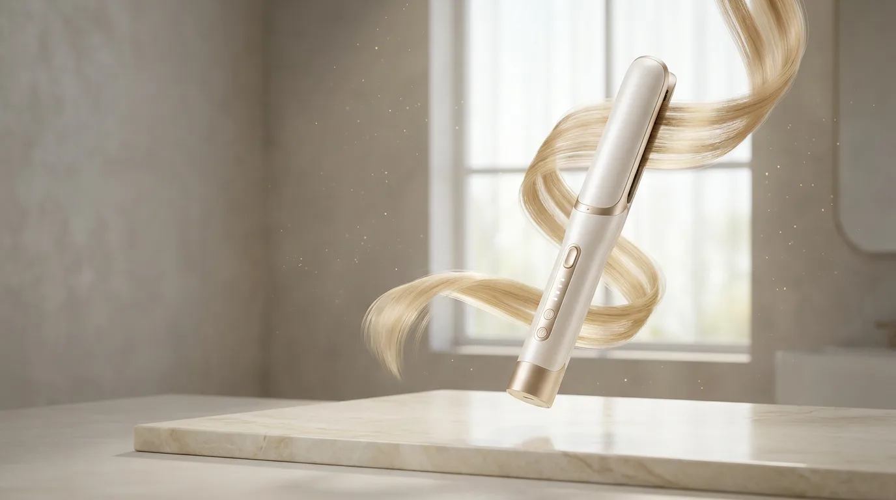
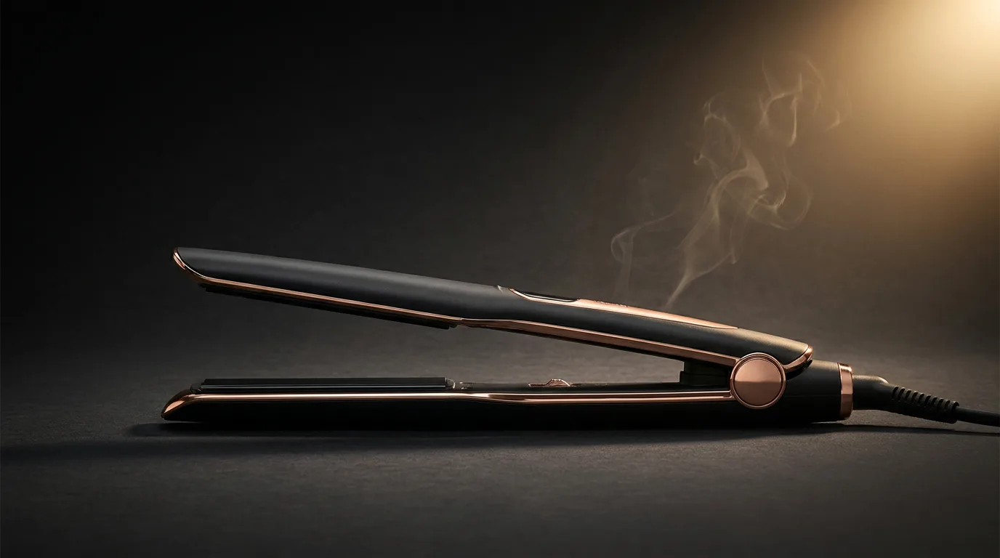

v1 · Éclat

Éclat
Светлый лакшери-эдиториал
Айвори и шампань-золото, крупная антиква, воздух и премиальная сдержанность. Ощущение глянцевого журнала.
Открыть концепт →v2 · Noir

Noir
Тёмный премиум-тех
Графит, стекло и золотое свечение, акцент на технологии и характеристики. Дорого и технологично.
Открыть концепт →v3 · Atelier
Atelier
Тёплый мягкий минимализм
Овсяный, терракота и блаш, скругления и уют. Премиум с человеческим, «заботливым» характером.
Открыть концепт →v4 · Motion (видео)
Motion
Кинематографичный видео-скролл
Настоящее AI-видео (Veo 3.1) прокручивается покадрово при скролле — как на страницах Apple. Wow-эффект.
Открыть концепт →v5 · Kinetic (3D)
Kinetic
3D-переходы при скролле (GSAP)
Плавный скролл, 3D-вращение товара, горизонтальная лента и параллакс. Живой, «инженерный» вайб.
Открыть концепт →О графике: все изображения и видео сгенерированы AI (Nano Banana Pro / Veo 3.1) специально под бренд и оптимизированы в WebP — страницы грузятся мгновенно. Товары, цены и характеристики — реальные (напр. утюжок BM Silk 2.0). Это концепты-прототипы: наполнение и товары легко заменить.